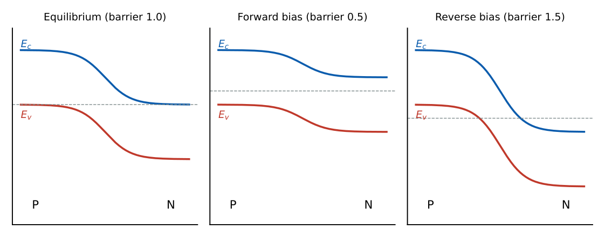
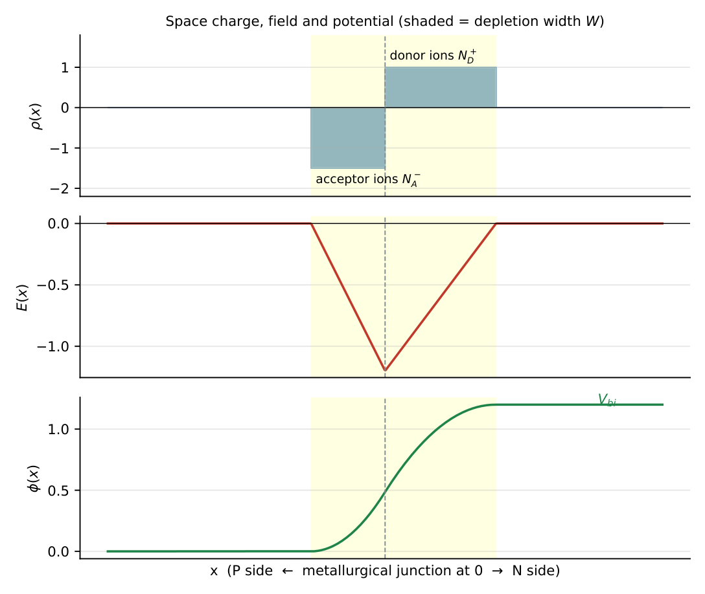
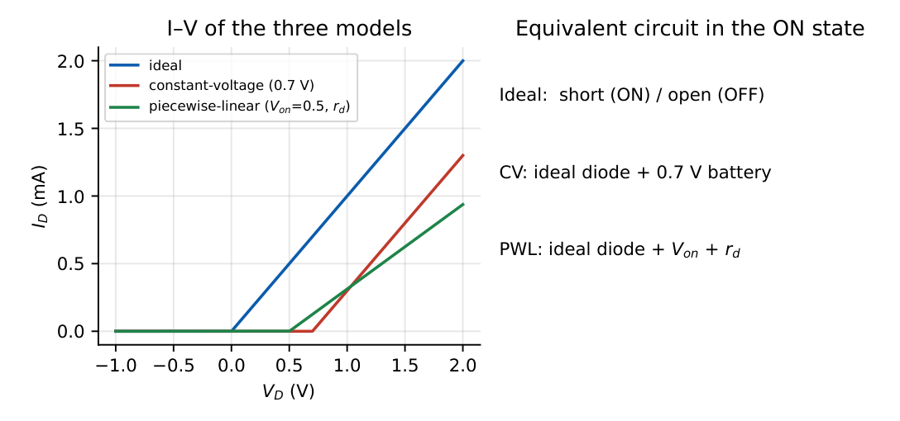
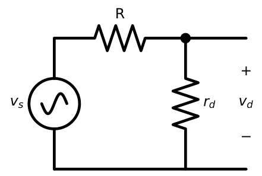
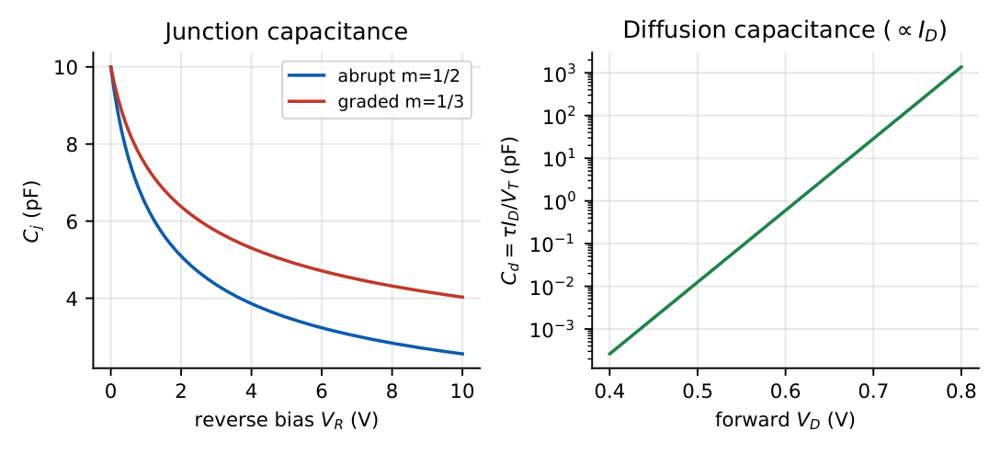
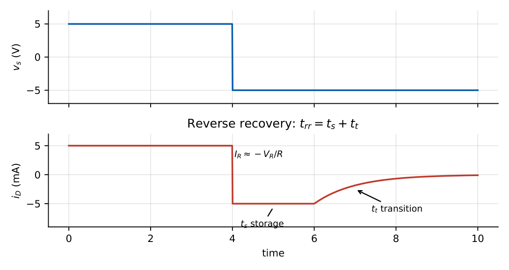

Semiconductor and Diode Fundamentals
In this chapter
- 1.1 Semiconductor basics
- 1.2 PN junction formation
- 1.3 Depletion region and built-in potential
- 1.4 Diode I–V characteristics
- 1.5 Ideal, constant-voltage and piecewise-linear models
- 1.6 Small-signal diode model
- 1.7 Dynamic resistance
- 1.8 Junction capacitance
- 1.9 Diffusion capacitance
- 1.10 Diode switching characteristics
- 1.11 Temperature dependence
- 1.12 GATE-level approximations
- 1.13 Common mistakes and conceptual traps
- 1.14 GATE previous-year problems (pattern-based)
- 1.15 Practice problems
1.1 Semiconductor basics
A pure (intrinsic) silicon crystal at \(300\) K has equal electron and hole concentrations \(n=p=n_i\approx1.5\times10^{10}\,\mathrm{cm^{-3}}\). Doping with donors (P, As) gives an n-type crystal; doping with acceptors (B) gives a p-type one. Two facts carry almost every GATE numerical:
Mass-action law: \(np=n_i^2\) Charge neutrality: \(p+N_D=n+N_A\)
n-type (\(N_D\gg n_i\)): \(n\approx N_D,\; p\approx n_i^2/N_D\) p-type: \(p\approx N_A,\; n\approx n_i^2/N_A\)
Drift: \(J=q(\mu_nn+\mu_pp)E\) Diffusion: \(J_n=qD_n\,dn/dx\)
Einstein relation: \(D/\mu=V_T=kT/q\approx26\) mV at 300 K
A silicon sample is doped with \(N_D=10^{16}\,\mathrm{cm^{-3}}\) donors. Find \(n\), \(p\) and the resistivity (\(\mu_n=1200\) cm\({}^2\)/V s, \(\mu_p=400\)).
\(n\approx10^{16}\), \(p=n_i^2/n=(1.5\times10^{10})^2/10^{16}=2.25\times10^{4}\,\mathrm{cm^{-3}}\). Conductivity \(\sigma=qn\mu_n=1.6\times10^{-19}\times10^{16}\times1200=1.92\,(\Omega\text{cm})^{-1}\), so \(\rho=0.52\ \Omega\) cm (the hole term is negligible).
1.2 PN junction formation
When p-type and n-type material are joined, holes diffuse from p to n and electrons from n to p, because of the concentration gradient. They leave behind uncovered ions: negative acceptor ions on the p side and positive donor ions on the n side. This space charge builds an electric field directed from n to p, which opposes further diffusion. At equilibrium the diffusion current and the drift current cancel exactly for each carrier type; net current is zero.

1.3 Depletion region and built-in potential
\(V_{bi}=V_T\ln\dfrac{N_AN_D}{n_i^2}\)
\(W=x_n+x_p=\sqrt{\dfrac{2\varepsilon}{q}\left(\dfrac1{N_A}+\dfrac1{N_D}\right)(V_{bi}-V_D)}\)
\(N_Ax_p=N_Dx_n\) (charge balance) the lightly doped side carries most of \(W\).
Peak field \(E_{max}=\dfrac{qN_Dx_n}{\varepsilon}\)

\(N_A=10^{17}\), \(N_D=10^{15}\,\mathrm{cm^{-3}}\), \(\varepsilon_{Si}=11.7\varepsilon_0=1.036\times10^{-12}\) F/cm. Find \(V_{bi}\) and \(W\) at zero bias.
\(V_{bi}=0.02585\ln\!\big(10^{32}/2.25\times10^{20}\big)=0.02585\times26.82=0.693\) V.
\(W=\sqrt{\dfrac{2(1.036\times10^{-12})(0.693)}{1.6\times10^{-19}}\,(1.01\times10^{-15})}=0.95\ \mu\)m, of which \(x_n\approx0.94\ \mu\)m lies on the lightly doped n side.
Under reverse bias \(V_R\), replace \(V_{bi}-V_D\) by \(V_{bi}+V_R\): \(W\propto\sqrt{V_{bi}+V_R}\) grows. Under forward bias \(W\) shrinks.
1.4 Diode I–V characteristics
Shockley equation: \(I_D=I_s\left(e^{V_D/(nV_T)}-1\right)\), \(\; n=1\) to \(2\).
Forward (\(V_D\gg V_T\)): \(I_D\approx I_se^{V_D/nV_T}\). Reverse (\(V_D<-4V_T\)): \(I_D\approx-I_s\).
Voltage for a given current: \(V_D=nV_T\ln(I_D/I_s)\). Ratio: \(\dfrac{I_2}{I_1}=e^{(V_2-V_1)/nV_T}\)
60 mV rule: \(\Delta V=2.3\,nV_T\log_{10}(I_2/I_1)\approx60\) mV per decade of current (\(n=1\)).

\(I_s=10^{-14}\) A, \(n=1\). (a) \(I_D\) at \(0.7\) V. (b) Change in \(V_D\) when \(I_D\) rises from 1 mA to 10 mA.
(a) \(I_D=10^{-14}e^{0.7/0.02585}=10^{-14}e^{27.08}=5.8\) mA.
(b) \(\Delta V=V_T\ln10=59.5\) mV, independent of \(I_s\).
Breakdown. Two mechanisms: Zener (heavily doped, thin \(W\), field-emission, \(V_{BR}<\approx5\) V, negative temperature coefficient) and avalanche (lightly doped, impact ionisation, \(V_{BR}>\approx7\) V, positive temperature coefficient). Near \(5\)–\(6\) V the two cancel, giving a near-zero temperature coefficient.
1.5 Ideal, constant-voltage and piecewise-linear models

| Model | ON condition | Equivalent |
|---|---|---|
| Ideal | \(V_D\ge0\) | short circuit; OFF: open, \(I=0\) |
| Constant-voltage | \(V_D\ge V_{on}\) (0.7 V Si, 0.3 V Ge) | battery \(V_{on}\) in series |
| Piecewise-linear | \(V_D\ge V_{on}\) | \(V_{on}\) battery \(+\) \(r_d\) in series |
Series circuit \(V_S=5\) V, \(R=1\) k\(\Omega\), diode in forward direction. Current by each model:
Ideal: \(5\) mA. CV: \((5-0.7)/1=4.3\) mA. Exact (Shockley, \(I_s=10^{-14}\)): \(V_D=0.692\) V, \(I=4.31\) mA. The CV model is within 0.3% here, because \(R\) dominates.
Whenever the source voltage is many times \(0.7\) V, the diode drop barely matters and the CV model is essentially exact. When the source is close to \(0.7\) V (say \(1\) V), the exponential character matters and the problem will usually give you the exponential law.
1.6 Small-signal diode model
Let the diode be biased at \((V_D,I_D)\) and a small signal \(v_d\) ride on it. Linearising \(i_D=I_se^{v_D/nV_T}\): \[ i_D=I_D+\frac{I_D}{nV_T}v_d+\cdots\quad\Rightarrow\quad i_d=\frac{v_d}{r_d},\qquad r_d=\frac{nV_T}{I_D}. \] Valid when \(v_d\ll nV_T\) (a few mV). The DC source is replaced by a short circuit and the diode by \(r_d\).

A diode is biased at \(I_D=1\) mA through a large resistor and a \(10\) mV peak, \(1\) kHz signal is superimposed by a source with \(R=1\) k\(\Omega\) in series. Find the AC diode voltage.
\(r_d=25.85\) \(\Omega\). \(v_d=10\,\mathrm{mV}\times\dfrac{25.85}{1000+25.85}=0.252\) mV peak.
1.7 Dynamic resistance
\(r_d=nV_T/I_D\) is the reciprocal slope of the I–V curve at the Q-point. Values worth memorising (\(n=1\), \(V_T=26\) mV): \(I_D=1\) mA \(\to26\ \Omega\); \(0.1\) mA \(\to260\ \Omega\); \(10\) mA \(\to2.6\ \Omega\). In the reverse-breakdown (Zener) region the corresponding quantity is \(r_z=\Delta V_Z/\Delta I_Z\), typically a few ohms to tens of ohms.
The dynamic resistance depends on the DC current, not on the DC voltage or on the size of the signal. Doubling \(I_D\) halves \(r_d\). It also differs from the static resistance \(V_D/I_D\): at \(0.7\) V and \(1\) mA the static resistance is \(700\ \Omega\) but \(r_d\) is only \(26\ \Omega\).
1.8 Junction capacitance
The depletion region is a parallel-plate capacitor with spacing \(W\):
\(C_j=\dfrac{C_{j0}}{\left(1+V_R/V_{bi}\right)^m}\), \(m=\tfrac12\) (abrupt), \(\tfrac13\) (linearly graded).
\(C_j=\varepsilon A/W\); falls as reverse bias increases. Varactor diodes exploit this.
\(C_{j0}=2\) pF, \(V_{bi}=0.7\) V, \(m=\tfrac12\). At \(V_R=3.3\) V: \(C_j=2/\sqrt{1+3.3/0.7}=2/2.39=0.84\) pF.
In a varactor tuning a resonant circuit \(f=1/(2\pi\sqrt{LC})\), \(C_j\propto(V_R)^{-1/2}\) gives \(f\propto V_R^{1/4}\) for large \(V_R\).
1.9 Diffusion capacitance
Under forward bias, minority carriers stored near the depletion edges change with voltage, giving \[ C_d=\frac{\tau_T\,I_D}{nV_T}\quad(\tau_T=\text{transit time}). \] \(C_d\) dominates under forward bias and is proportional to \(I_D\); \(C_j\) dominates under reverse bias.

\(\tau_T=10\) ns, \(I_D=1\) mA: \(C_d=10^{-8}\times10^{-3}/0.02585=387\) pF. Note that this is far larger than any typical \(C_j\).
1.10 Diode switching characteristics
When a forward-conducting diode is suddenly reverse-biased, the stored minority charge must be removed first. Current stays at \(I_R\approx-V_R/R\) for the storage time \(t_s\) and then decays over the transition time \(t_t\); the total is the reverse recovery time \(t_{rr}=t_s+t_t\).

Approximately, \(t_s\approx\tau\ln\!\left(1+\dfrac{I_F}{I_R}\right)\), where \(\tau\) is the minority carrier lifetime. Schottky diodes (metal–semiconductor, majority-carrier) have essentially no storage time and a lower drop (\(\approx0.3\)–\(0.4\) V), so they are used in fast switching and rectification.
\(\tau=20\) ns, \(I_F=10\) mA, \(I_R=5\) mA: \(t_s=20\ln3=22\) ns.
1.11 Temperature dependence
At fixed \(I_D\): \(\dfrac{dV_D}{dT}\approx-2\ \mathrm{mV/^\circ C}\) (Si).
\(I_s\) roughly doubles per \(10\,{}^\circ\)C; \(V_T=kT/q\) rises by \(0.086\) mV/K.
Reverse leakage also doubles per \(10\,{}^\circ\)C.

A diode has \(V_D=0.70\) V at \(25\,{}^\circ\)C, \(1\) mA. At \(75\,{}^\circ\)C and the same current: \(V_D=0.70-2\times50/1000=0.60\) V. Its reverse current has grown by about \(2^{5}=32\times\).
1.12 GATE-level approximations
| Quantity | Value to use |
|---|---|
| \(V_T\) at 300 K | 25–26 mV (use 26 unless told otherwise) |
| Si / Ge drop | 0.7 V / 0.3 V |
| Schottky drop | 0.3–0.4 V |
| LED drop | 1.8–3 V (given in question) |
| \(r_d\) | \(26\,\mathrm{mV}/I_D\) |
| Current \(\times10\) | \(V_D\) increases by \(\approx60\) mV |
| Temp. coefficient | \(-2\) mV/\({}^\circ\)C |
1.13 Common mistakes and conceptual traps
1. Using \(r_d\) with the wrong current: it is the DC bias current at the Q-point.
2. Treating a diode as ON because the source is positive. The correct test is \(V_A-V_K\ge V_{on}\) in the final circuit.
3. Forgetting the \(-1\) in Shockley’s equation for reverse or near-zero bias.
4. Confusing \(C_j\) (reverse, depends on \(V_R^{-m}\)) with \(C_d\) (forward, proportional to \(I_D\)).
5. Zener vs. avalanche temperature coefficients: negative for Zener (\(<5\) V), positive for avalanche (\(>7\) V).
1.14 GATE previous-year problems (pattern-based)
Q1. A silicon diode has \(I_D=1\) mA at \(V_D=0.65\) V. Assuming \(n=1\) and \(V_T=26\) mV, the voltage at which \(I_D=10\) mA is closest to (A) 0.68 V (B) 0.71 V (C) 0.75 V (D) 0.78 V.
Q2. A diode operating at \(I_D=2.6\) mA has a small-signal resistance (in \(\Omega\), \(n=1\), \(V_T=26\) mV) of .
Q3. Which one of the following is TRUE for a forward-biased PN junction when temperature increases at constant current? (A) \(V_D\) increases (B) \(V_D\) decreases (C) \(I_s\) decreases (D) depletion width increases.
Q4. For an abrupt junction with \(N_A\gg N_D\), the depletion width extends (A) mostly into p (B) mostly into n (C) equally (D) only in the metallurgical plane.
Q5. The junction capacitance of a varactor with \(m=1/2\) is \(8\) pF at \(V_R=1\) V (take \(V_{bi}\ll V_R\)). At \(V_R=4\) V it is pF.
Answers: Q1: \(\Delta V=26\ln10=59.9\) mV \(\Rightarrow0.71\) V (B). Q2: \(r_d=26/2.6=10\ \Omega\). Q3: (B). Q4: (B), lightly doped n side. Q5: \(C\propto V_R^{-1/2}\Rightarrow8/2=4\) pF.
1.15 Practice problems
- Find \(V_{bi}\) for \(N_A=N_D=10^{16}\,\mathrm{cm^{-3}}\) (Si, \(n_i=1.5\times10^{10}\)). [0.69 V]
- A diode carries \(5\) mA at \(0.72\) V. What current flows at \(0.66\) V (\(n=1,V_T=26\) mV)? [\(5e^{-0.06/0.026}=0.50\) mA]
- A Ge diode at \(25^\circ\)C has \(I_s=1\ \mu\)A. Estimate \(I_s\) at \(65^\circ\)C. [\(\approx16\ \mu\)A]
- Find \(r_d\) at \(I_D=0.26\) mA. [100 \(\Omega\)]
- Compute \(C_d\) if \(\tau_T=2\) ns and \(I_D=5.2\) mA. [400 pF]
- State two reasons why a Schottky diode switches faster than a PN diode. [no minority-carrier storage; lower junction capacitance]